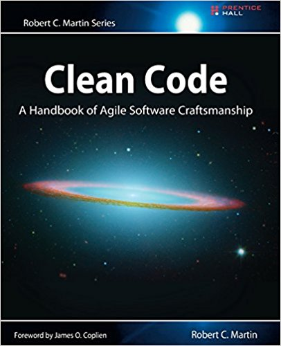

Practical Functional Java
Overview
Jeff Butler
github.com/jeffgbutler/practical-functional-java
About Me
- Enterprise Architect for DMI in Indianapolis
- Committer to Apache iBatis/MyBatis since 2005
- Creator of MyBatis Generator
- Creator of MyBatis Dynamic SQL
- Voracious reader, adventurous eater, lawn care enthusiast
- Desert Island disks include White Stripes, Beck, Nirvana, Jimmie Dale Gilmore, Marty Stuart
How this Workshop Came to Be
- I finally learned JavaScript
- Java 8 Study Group
- "Clean Code" Book Clubs at DMI and our clients
- MyBatis Dynamic SQL
- These experiences have changed the way I think about coding.
Plan for the Workshop
- Some thoughts about Functional Programming
- Immutability Review and Exercises
- Lambda Review
- Streams Review and Exercises
- Optionals Review
- Function Composition Review
- Two multi-step guided exercises
- Coda: Advanced Immutability
Focus on Practical - Very Few $10 Vocabulary Words!
Functional Programming Hype
- Solves all your concurrency problems!
- The solution to Moore's Law slowing down!
- Super Trendy! Big Money!
- Retro/Vintage/Hipster Programming - Lisp is Cool Again!
But seriously, how many people in this room...
- have major concurrency problems?
- have a Moore's Law problem?
I want to be a functional programmer!
Wrong answer
I want to be a better programmer!
This is why we're here...

What is clean code?
- Meaningful Names
- Small Methods
- Small Classes
- TDD
- SOLID Principles
Functional practices urge us towards clean code
What is Functional Programming?
- Functions as first class citizens?
- Pure functions?
- Lambdas?
- Closures?
- Recursion with Tail Call Optimization?
- Lazy streams?
- Immutability?
- Declarative vs. Imperative?
- Monads (Haskell)?
- Code as Data (Lisp)?
Argh!
No one can define it!
Except maybe Uncle Bob...
Next Steps
- Demo and overview of the source repo
- Setup Exercise: Make sure you can run the tests in whatever IDE you choose